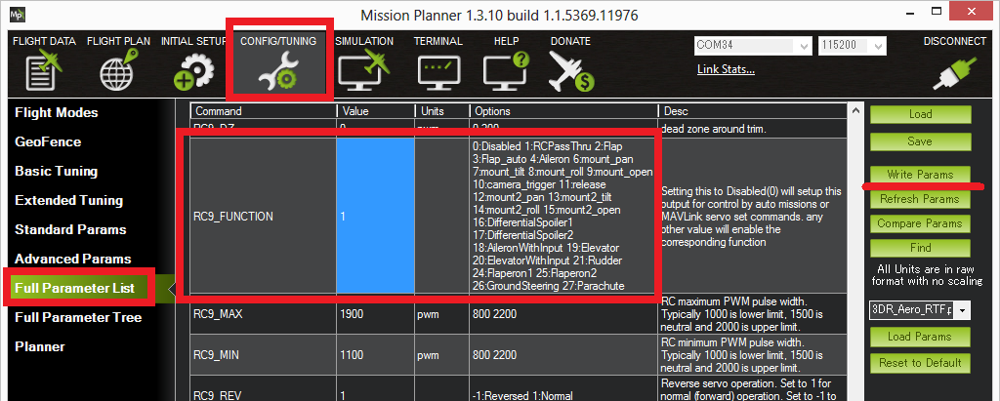
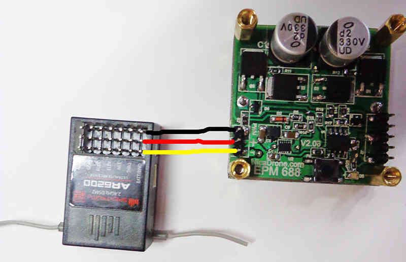
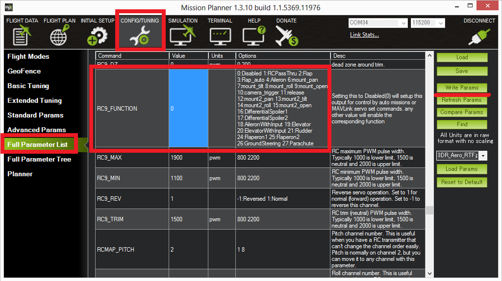
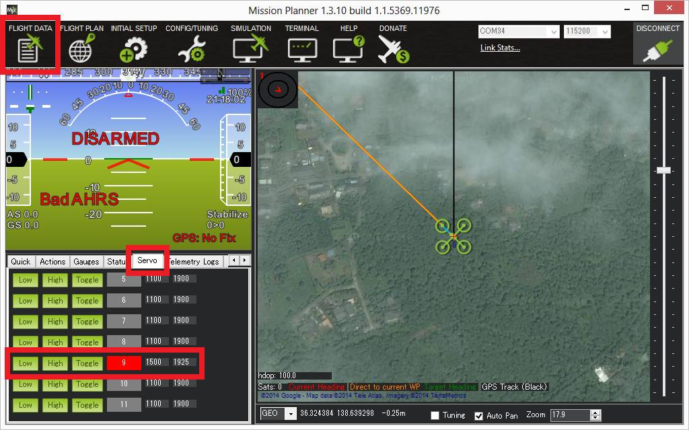
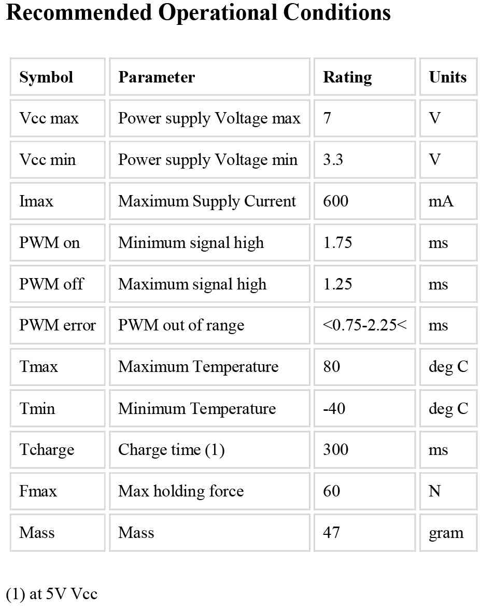

Electro Permanent Magnet Gripper (EPM688)¶
This article shows how to use the Electro Permanent Magnet Gripper (EPM688) with ArduPilot.
Overview¶
The EPM688 (from NicaDrone.com) is a small (less than 4cm x 4cm x 2cm) Electro Permanent Magnet gripper capable of 7kg of force meaning it can hold about 1kg of cargo. The gripping and releasing of the cargo if accomplished by delivering a short pulse to an electromagnet which reverses its field. Objects that it grips onto should be metal or have the included thin steel target square attached to them.
The device accepts a standard PWM servo input and uses a 5V power supply. Significant amounts of power are only required for less than 1 second when it first grips or releases the cargo.
Connecting to a Pixhawk¶

The EPM is connected to the Pixhawk in the same way as a servo.
If using Copter, Connect the EPM to AUX OUT 1, 2, 3 or 4. MAIN OUT 1 ~ 8 cannot be used because the EPM does not accept the 400hz update rate. AUX OUT 5 an 6 cannot be used because they are reserved for Relays.
If using Plane or Rover where all pwm pins update at 50hz, any unused MAIN OUT or AUX OUT 1 ~ 4 may be used.
A BEC or ESC should be used that can provide 600milliamps of current at 5V for the short period that the gripper is first activated to latch onto the cargo.
Controlling from a transmitter using servo pass-through¶
Unfortunately with the latest versions of Copter, Plane and Rover the EPM can be controlled either from the transmitter OR during missions. Either is possible but parameter changes are required meaning both methods are not available during a single flight. Below are instructions for setting up manual control through a transmitter.
{kind=link}
Control using the transmitter is accomplished by setting up “RC Pass Through” which means the “input” channel from the transmitter is passed through to the autopilot’s “output” channel of the same number. For Copter this means you must have a transmitter capable of 9 or more channels because the EPM is connected to output ch9 (or higher).
Assuming the above is possible for your set-up, connect with the mission planner. Go to the Config/Tuning >> Full Parameters List and set the SERVO9_FUNCTION (or RC9_FUNCTION) to “1” (i.e. “RCPassThru”). Note that if the EPM is connected to AUX OUT 2 then SERVO10_FUNCTION should be set instead, etc.
On the transmitter set CH9 to be controlled from a 3-position switch and the positions set as follows:
low position set to about **1100 pwm*. This will release the cargo*
mid position set to about **1500 pwm*. This is the neutral position, after pulling the switch high or low to grab or release, the switch should be returned to this position*
high position set to about **1900 pwm*. This will activate the EPM so it grips onto the cargo.*
To grab onto the cargo, bring the cargo close to the EPM and momentarily bring the switch high and then return the switch to neutral.
To release the cargo, momentarily bring the switch low and then return it to neutral.
Note: the Copter Ch7/Ch8 switch includes options for the EPM but these unfortunately do not function properly.
Note: it is also possible (if using an older style, non ppm-sum receiver) to directly connect one signal wire from the receiver to the EPM’s PWM pin thus bypassing the autopilot completely. The image below shows the power line between the receiver and EPM connected but this is not correct and is quite dangerous because power spikes could pass through the receiver to the autopilot. Only PWM and Ground should be connected. The EPM should be powered from a BEC (not shown below).
{kind=link}
Controlling during missions and from GCS¶
As mentioned above, the EPM can be controlled either through a transmitter or from the ground station (including during missions, aka AUTO mode) but not both during the same flight. Below are instructions for setting up control through the ground station.
{kind=link}
Connect with the mission planner. Go to the Config/Tuning >> Full Parameters List and set the SERVO9_FUNCTION (or RC9_FUNCTION) to “0” (its default value). Note that if the EPM is connected to Pixhawk’s AUX OUT 2 then SERVO10_FUNCTION (or RC10_FUNCTION) should be set instead, etc.
Create the mission you wish to fly and add pairs of DO_GRIPPER
commands to grip or release the cargo .The EPM is returned to neutral after each command.
“Ser No” should be set according to which output the EPM is connected to (i.e. “9” = Pixhawk’s AUX OUT 1, “10” = APM2’s RC10).
“PWM” should be set to 1100ms to release the cargo, 1500ms to return to neutral, and 1900ms to grip the cargo.
{kind=link}
In the example above the vehicle takes off to 20ft, flies west 548ft where it delays for 5 seconds, releases the cargo, delays another 5 seconds and then returns home.
In order to pick up the cargo before the mission begins, push the round black button on the EPM to momentarily turn it on. A cumbersome alternative is to use the Mission Planner’s Flight Data screen’s Servo tab to momentarily set the output to 1900 pwm (i.e. “High” in the image below) and then back to neutral (i.e. 1500 or “Low” in the image below).
{kind=link}
Specifications and more info¶
{kind=link}
The EPM has an onboard PIC12F MCU with an in circuit programming header to allow easy reflashing.
When first gripping or releasing the cargo it consumes 400mA for 0.4 seconds. The majority of the energy is consumed to move the target into place and the rest realigns the magnets. The on-board LED will blink rapidly 4 times when a switching cycle is being executed
On-board tactile push button: Allows toggle testing the EPM on/off having only the power connected
Full bridge Thyrisotor drive circuit increases efficiency and reduces capacitor size .
Reduced magnetic interference allows mounting within 5cm of a compass (please test it with your application)
Magnetic interference and Board Voltage check¶
The EPM can cause magnetic interference especially while gripping or releasing the cargo or if left in the “on” state with no cargo attached. Make sure to mount the EPM at least 10cm from the flight controller’s compass.
The EPM’s impact on the compass can be tested in real-time by connecting with the Mission Planner, go to the Flight Data screen and click on the “Tuning” checkbox at the bottom, middle. Double click on the graph that appears on the top right and when the “Graph This” window appears select “magfield”.
Turning the EPM on and off and ensure the magfield length does not change by more than 10%.

In addition to magnetic interference, if a weak BEC is used a voltage drop may be noticed. For example the BEC in a 3DR ESC leads to a drop of 0.4V when the EPM is activated. This is normally not a concern because the BEC should only be powering the servo rail of the autopilot, so the CPU’s voltage should be unaffected. This can be tested by graphing the “hwvoltage” field in the same way the “magfield” was checked above. Ideally this test should be performed when connected via Telemetrybecause a USB cable will also provide power the CPU and may hide any voltage disturbance.